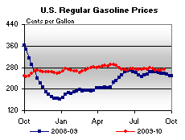

Released on September 15, 2010
(Next Release on September 22, 2010)
EIA Updates Gulf of Mexico Webpage and
Introduces Hurricane Page
During hurricane season, the Energy Information Administration (EIA) is often looked to for information regarding potentially impacted energy infrastructure and production. In the event that there are significant impacts, EIA works closely with the Department of Energy’s Office of Electricity Delivery and Energy Reliability, which has the lead on emergency response. To support these efforts, EIA has recently updated its Gulf of Mexico Fact Sheet and implemented a new Hurricane page.
|
|
The centerpiece of both pages is an interactive map of the relevant region, which enables users to choose the types of facilities displayed from a list including various petroleum, natural gas, and electric installations (Figure 1).
Figure 1. Hurricane Display Illustration Showing Hurricane Earl's Path on
September 3, 2010
Click Map to Enlarge PDF
The Gulf of Mexico Fact Sheet, accessible at all times from the EIA home page, presents information on infrastructure throughout the Gulf coastal region, both onshore and offshore. In addition to the interactive map, data tables summarize Gulf Coast oil and gas offshore production, petroleum refining, and natural gas processing. Relevant web links for EIA and other government sites are listed, including links specific to hurricanes and the Deepwater Horizon oil spill.
The EIA Hurricane page will be active only when a hurricane or tropical storm is threatening the United States, and will be accessible from the EIA home page. This page includes an interactive map of the affected area, updated periodically with the latest path projection from the National Hurricane Center (NHC). Also included are text updates on the storm’s location, direction, and intensity, along with implications for the energy sector; and links to reports from the NHC, the Department of Energy, and other involved Government agencies. The Hurricane page was used for the first time in early September during Hurricane Earl’s passage up the East Coast. Currently, EIA is not reporting on any storms; the map depicted above is the last update of Hurricane Earl on September 3. Past EIA reports on significant storms are archived on the Historical/Selected Significant U.S. Energy Disruptions page.
So far, the 2010 hurricane season has been moderately active, with a total of 11 named storms, 5 of which became hurricanes, of which Hurricane Earl has had the most impact to the United States to date. However, these storms have not severely threatened Gulf of Mexico facilities. As noted in last week’s This Week in Petroleum, the National Oceanic and Atmospheric Administration (NOAA) has updated its outlook for the 2010 hurricane season, and EIA has updated its projections of shut-in oil and gas production in the Gulf of Mexico. As of September 15, Hurricane Igor (currently Category 4) is located over the open Atlantic east of the Leeward Islands, and is projected to travel northwest toward Bermuda over the remainder of this week. Hurricane Julia (currently Category 4) is projected to head northwest, remaining over open water. Tropical Storm Karl made landfall on the eastern coast of the Yucatan Peninsula this morning and is expected to continue moving west across the southwestern Gulf of Mexico. All three storms will bear watching over the next week.
U.S. Average Gasoline Price Moves up Four Cents
At $2.72 per gallon, the U.S. average price for regular gasoline was four cents above last week and $0.14 higher than a year ago. Prices increased in all major regions except for the West Coast. The average on the East Coast increased two cents to $2.62 per gallon. The Midwest tallied the largest increase after soaring more than a dime to $2.78 per gallon. Although the average price on the Gulf Coast gained two cents, it remained the lowest of any region at $2.54 per gallon. The Rocky Mountain price rose about a penny to settle at $2.83 per gallon. The average on the West Coast slipped almost two cents to $2.98 per gallon and the California price fell a cent and a half to $3.03 per gallon.
The national average for diesel fuel rose a penny to $2.94 per gallon after four consecutive weekly decreases. The average is $0.31 per gallon higher than last year at this time. On a regional basis, the East Coast, Gulf Coast, and Rocky Mountain prices were a cent higher, while the Midwest average grew by two cents. The West Coast average lost a fraction of a cent to remain at $3.10 per gallon and the California price was also down slightly.
Propane Inventories Remain in the Middle of the Average Range
Although total U.S. stocks of propane experienced a slight draw last week, dropping by 0.2 million barrels to end at 63.7 million barrels, over the last two weeks propane inventories have increased by 1.3 million barrels. The East Coast regional stocks fell by 0.5 million barrels, while the Gulf Coast regional stocks dropped 0.2 million barrels. Meanwhile, the Midwest regional inventories added 0.5 million barrels and the Rocky Mountain/West Coast stocks were up a bit. Propylene non-fuel use inventories represented 3.9 percent of total propane/propylene stocks.
Text from the previous editions of This Week In Petroleum is accessible through a link at the top right-hand corner of this page.
| Retail Prices (Cents Per Gallon) | |||||||
|  | |||||||
| Retail Data | Changes From | Retail Data | Changes From | ||||
| 09/13/10 | Week | Year | 09/13/10 | Week | Year | ||
| Gasoline | 272.1 | Diesel Fuel | 294.3 | ||||
| Spot Prices (Cents Per Gallon*) | |||||||||||||||||||||||||||||||||||
|
|||||||||||||||||||||||||||||||||||
| *Note: Crude Oil WTI Price in Dollars per Barrel. | |||||||||||||||||||||||||||||||||||
| Stocks (Million Barrels) | |||||||
 |
|||||||
| Stocks Data | Changes From | Stocks Data | Changes From | ||||
| 09/10/10 | Week | Year | 09/10/10 | Week | Year | ||
| Crude Oil | 357.4 | Distillate | 174.5 | ||||
| Gasoline | 224.5 | Propane | 63.736 | ||||